Our top of animes
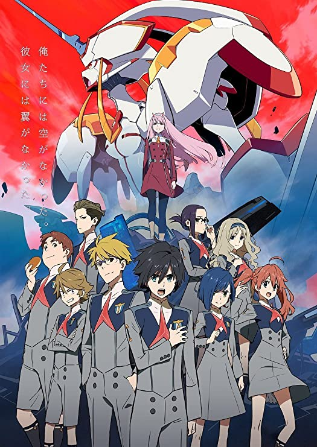

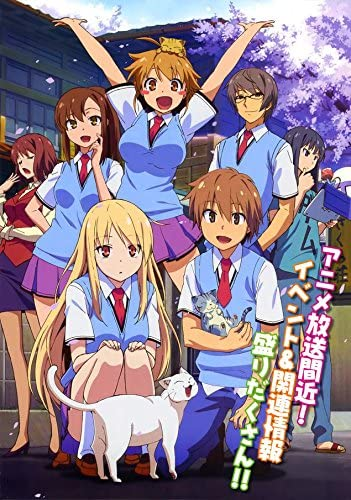


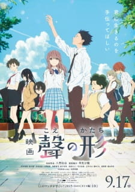
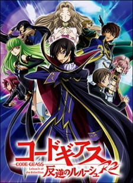
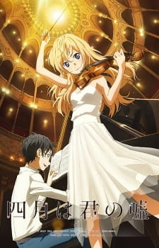
Reviews
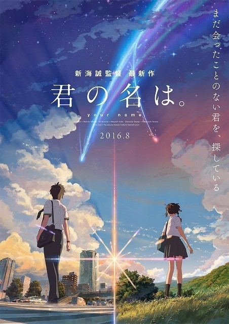
Although rooted in certain traditional elements from Japanese culture like Japanese shrine settings, the characters themselves are adolescents who use smartphones and have crushes and social anxieties like real people. They are incredibly relatable—the girl wants to leave her constrictive rural town and the boy attends a stereotypical city school and works a part time job at a restaurant. The accuracy with which the smartphones resemble iPhones provided a connection to the modern world. And it is through smartphones that the boy and girl choose to record what happens while they are body swapping.
Kimi no na wa (Your name)
Kimi no Na wa (English translation: Your Name), a Japanese animated film by director Makoto Shinkai, is a perfect example of this escapism-through-animation. The film is about two characters, a girl who lives in rural Japan and a boy who lives in Tokyo. The two characters swap bodies and end up living each other’s lives at unpredictable times. The story follows the two characters’ relationship with small supernatural elements and traditional Japanese mythology interwoven with the plot.Although rooted in certain traditional elements from Japanese culture like Japanese shrine settings, the characters themselves are adolescents who use smartphones and have crushes and social anxieties like real people. They are incredibly relatable—the girl wants to leave her constrictive rural town and the boy attends a stereotypical city school and works a part time job at a restaurant. The accuracy with which the smartphones resemble iPhones provided a connection to the modern world. And it is through smartphones that the boy and girl choose to record what happens while they are body swapping.
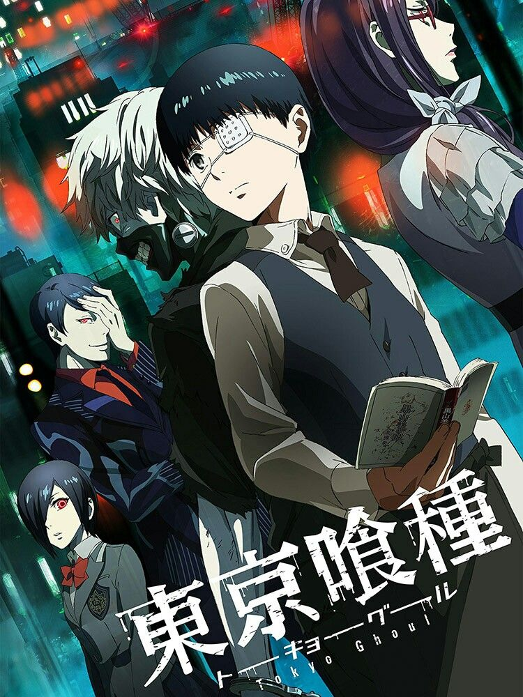
Before entering the dark domain of creatures that are indistinguishable from humans — until it’s too late — the images are bright and the tone is bouncy. Ken Kaneki (Masataka Kubota) is a shy university student who finally finds the courage to approach sweet and sensitive bookworm Rize (Yu Aoi, looking like she hasn’t aged a day since the 2006 charmer “Hula Girls”). Kubota’s boyish good looks and convincing performance as a bumbling nice guy ensures that Ken will have viewers on his side right from the start.
Tokyo Ghoul
A nerdy college boy is transformed into a half-human, half-monster hybrid in “Tokyo Ghoul,” an uneven live-action adaptation of Sui Ishida’s hit manga about flesh-eating creatures running amok in an alternate contemporary Japan. Stylishly decorated and generating all-important sympathy for a character living precariously in two worlds, director Kentaro Hagiwara’s feature debut gets the drama right but is let down by visual effects that are sometimes unconvincing. Given the massive global popularity of the manga and its spinoff anime series, “Tokyo Ghoul” should get off to a flying start when it opens domestically on July 29, followed by an international rollout in August (which could help build interest for a U.S. release tentatively planned later this fall by Funimation).Before entering the dark domain of creatures that are indistinguishable from humans — until it’s too late — the images are bright and the tone is bouncy. Ken Kaneki (Masataka Kubota) is a shy university student who finally finds the courage to approach sweet and sensitive bookworm Rize (Yu Aoi, looking like she hasn’t aged a day since the 2006 charmer “Hula Girls”). Kubota’s boyish good looks and convincing performance as a bumbling nice guy ensures that Ken will have viewers on his side right from the start.
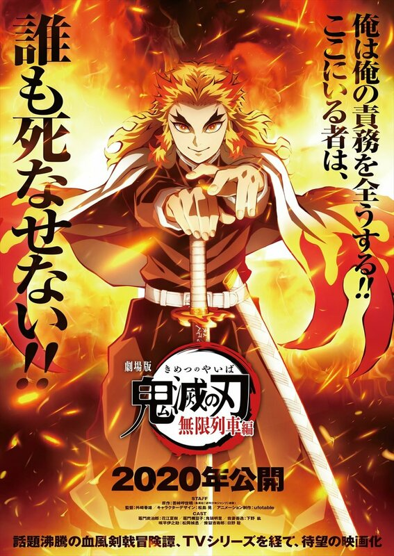
Tanjiro’s journey aligns himself with Zenitsu and Inosuke, two fellow budding fighters, and the lot experiences significant growth and challenging hardships the further they go. There’s also a very natural chemistry and sense of humor between this core group of characters, which helps balance out the anime’s more melodramatic moments.
Tanjiro and his group go through the usual hurdles of training and battles as they learn and refine powerful abilities. Demon Slayer doesn’t cram too much into its first season and the majority of these episodes get a chance to breathe where the characters can properly express themselves and not be rushing from one battle to the next.
Demon Slayer
Demon Slayer begins in an explosive manner that turns the relatively timid Tanjiro Kamado into a vengeful warrior after he experiences the worst kind of trial by fire. Demons attack Tanjiro’s family and turn his sister, Nezuko, into one of their kind. The newly orphaned Tanjiro meets a Demon Slayer and becomes committed to avenging his family’s death, taking down any evil creatures that he encounters, and cure his sister of her unfortunate fate.Tanjiro’s journey aligns himself with Zenitsu and Inosuke, two fellow budding fighters, and the lot experiences significant growth and challenging hardships the further they go. There’s also a very natural chemistry and sense of humor between this core group of characters, which helps balance out the anime’s more melodramatic moments.
Tanjiro and his group go through the usual hurdles of training and battles as they learn and refine powerful abilities. Demon Slayer doesn’t cram too much into its first season and the majority of these episodes get a chance to breathe where the characters can properly express themselves and not be rushing from one battle to the next.
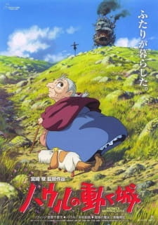
But it was not to be. While the movie contains delights and inventions without pause and has undeniable charm, while it is always wonderful to watch, while it has the Miyazaki visual wonderment, it's a disappointment, compared to his recent work. Adapted from a British novel by Diana Wynne Jones, it resides halfway between the Brothers Grimm and "The Wizard of Oz," with shape-shifting that includes not merely beings but also objects and places.
Moving castle (Howl no Ugoku Shiro)
Almost the first sight we see in "Howl's Moving Castle" is the castle itself, which looks as if it were hammered together in shop class by wizards inspired by the lumbering, elephantine war machines in "The Empire Strikes Back." The castle is an amazing visual invention, a vast collection of turrets and annexes, protuberances and afterthoughts, which makes its way across the landscape like a turtle in search of a rumble. I settled back in my seat, confident that Japan's Hayao Miyazaki had once again created his particular kind of animated magic, and that the movie would deserve comparison with "Spirited Away," "Princess Mononoke," "My Neighbor Totoro," "Kiki's Delivery Service" and the other treasures of the most creative animator in the history of the art form.But it was not to be. While the movie contains delights and inventions without pause and has undeniable charm, while it is always wonderful to watch, while it has the Miyazaki visual wonderment, it's a disappointment, compared to his recent work. Adapted from a British novel by Diana Wynne Jones, it resides halfway between the Brothers Grimm and "The Wizard of Oz," with shape-shifting that includes not merely beings but also objects and places.
Recent manga
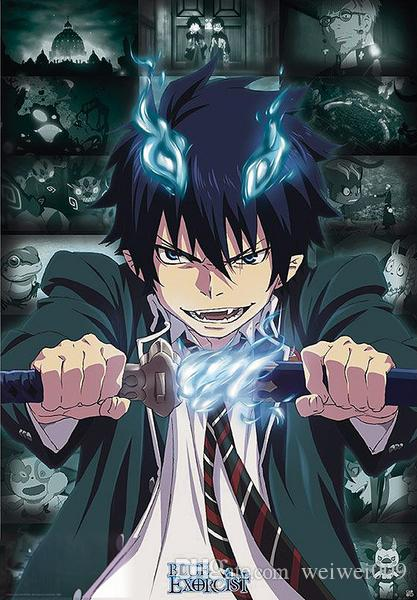
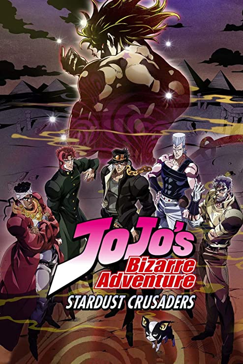
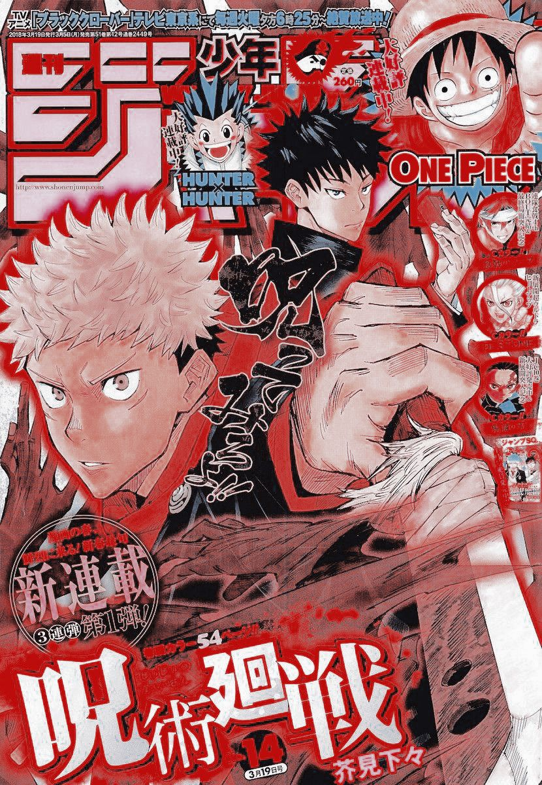